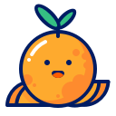

Fierce
The wolf , also known as the grey/gray wolf or timber wolf, is a canine native to the wilderness.
The wolf , also known as the grey/gray wolf or timber wolf, is a canine native to the wilderness.
 Misterious
MisteriousDefinition of mysterious - difficult or impossible to understand, explain, or identify.
Squeak
If something or someone squeaks , they make a short, high-pitched sound.
If something or someone squeaks , they make a short, high-pitched sound.
Fox
Small-to-medium-sized, omnivorou mammal belonging to several genera of the .
Small-to-medium-sized, omnivorou mammal belonging to several genera of the .
Juicy
Full of juice containing a lot of juice
Full of juice containing a lot of juice